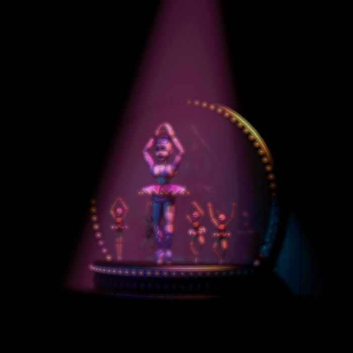
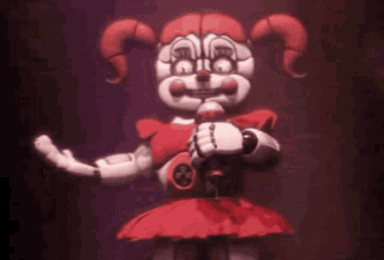

Use of a mark in Bootstrap
Use ctrl + p to open the Print dialog box
Ballora is a major antagonist and ballerina dancer animatronic who first appeared in Five Nights at Freddy's: Sister Location, where she entertains at her own gallery room from the west of Circus Baby's Entertainment and Rental.
Circus Baby (commonly referred to as Baby) is the secondary antagonist of the Five Nights at Freddy's franchise and the animatronic mascot of Circus Baby's Pizza World invented by Afton Robotics, LLC and made for Fazbear Entertainment, Inc. Baby is haunted by the soul of Elizabeth Afton, who was the daughter of the serial killer William Afton. However, during the completion ending, Elizabeth's soul was presumably set free.
Funtime Foxy is one of the seven animatronics (twelve if the Custom Night animatronics are counted) and an antagonist in Five Nights at Freddy's: Sister Location. They are a circus-themed version of Foxy. They are also one of the entertainers of the Funtime Auditorium (which is located to the east of Circus Baby's Entertainment and Rental), the other being Funtime Freddy (although he isn't seen in the auditorium).

Funtime Freddy is a major antagonist who first appeared in Five Nights at Freddy's: Sister Location as the titular antagonist. He is a circus-themed version of Freddy Fazbear. He is also one of the entertainers from the Funtime Auditorium, which is located from the east of Circus Baby's Entertainment and Rental (although he isn't seen in the said auditorium). The other being Funtime Foxy.

Column Right
Student
Ballora is very seductive and deadly, seemingly calm and composed. She also appears to be very talented at singing. Circus Baby says that "Ballora never learns," which might imply that either Ballora does not like to play pretend or is not able to do so as well as Baby does. Ballora also seems to be very sadistic and taunting and is fearless of what the player thinks of her.
Animatronic
Funtime Foxy appears to be another model for the intact version of Mangle, who (based on their appearance in FNaF World) was also named Funtime Foxy. This is apparent from their pink-and-white color scheme and the fact that it is a fox animatronic. However, unlike Mangle, they are in a completely repaired form (prior to the ending in which it gets scooped). Funtime Foxy's entire body is covered of segmented lines, of which some parts are colored in gray. They also possesses a long bushy tail, similar to an average fox. Like many of Foxy's counterparts, they have yellowish-orange eyes.
About Him Learn More! Feedback
Animatronic
Funtime Freddy is an energetic animatronic bear who enjoys entertaining children but secretly is a psychotic, deranged and sadistic animatronic laughing with glee as he attempts to kill his victims and takes delight in the tormenting of them. He speaks in a raspy, bloodthirsty voice with a crazed, hysterical tone. He also has an echo in his voice like a stereotypical robot, and also glitches since he is broken. Funtime Freddy also taunts the player, saying that the only thing he wants is to take the lives of innocent people for the sake of it. He also taunts his victims helplessness, saying no one will hear them scream. Funtime Freddy even wants to traumatize and haunt his victims if he can't kill them. He is also arrogant as when he loses he will refuse to accept it and believes his adversaries simply got lucky.
Animatronic
Toy Chica takes the appearance of a stereotypical feminine character. She is a yellow-orange chicken with an orange beak, blue eyes, purple eyelids, long eyelashes, and orange feet. She has a few stray "feathers" that stick out from the top of her head. She has blushed cheeks, like the other toy animatronics, though hers are pink rather than red. Unlike her original counterpart, Toy Chica's body is noticeably curvy, rather than simply round and ovular like the original Chica's.
Animatronic
Out of all of the redesigns, Toy Bonnie seems to have undergone the most drastic of changes, not counting Mangle. He is colored a bright, shiny blue, with his belly, muzzle, and insides of his ears colored a pale, powder blue. He has green eyes, magenta eyelids, long eyelashes, and rosy red, blushed cheeks. He also has a white circular tail, which can only be seen when he is crawling through the Right Air Vent. He has eyebrows, unlike the original Bonnie, and no longer has similarities to Toy Freddy appearance-wise.
Animatronic
Mangle has a white-colored fox head, with rosy red cheeks and lipstick. They have one eye with an amber iris and black pupil, while the other one is hollow/black. They have a pink accented snout with a small black nose and pink outline around their eyes. Mangle has a set of sharp teeth on their upper and lower jaw. Wires dangle out of their ear sockets. Their body is a mess of wires and endoskeleton parts, an entire separate endoskeleton head attached to their body, with wires dangling out of its eye socket. They have a hand attached where their head should be. If looked at closely, it can be seen that Mangle has pink nail polish on its feet. They sport a pink bowtie dangling off one of their limbs.
Animatronic
The Puppet is an animatronic puppet and a major antagonist of the Five Nights at Freddy's series, first appearing in Five Nights at Freddy's 2, but minigames from the second game and afterwards show the Puppet's tragic and heroic side. It possibly serves as the prize vendor of the newly refurbished Freddy Fazbear's Pizza of 1987, although it's implied that it was originally from Fredbear's Family Diner or a previous Freddy Fazbear's Pizza prior to the one opened in 1987. Unlike the other toys who were scrapped due to possible malfunctions, the Puppet was not scrapped, as it appeared later in the new pizzeria from the first game (as evident by the "end-of-night hallucinations") and appearing as Lefty in Freddy Fazbear's Pizzeria Simulator. Lefty was an animatronic intended to capture the Puppet, as Charlotte Emily's father, Henry Emily knew that her soul possessed the Puppet.